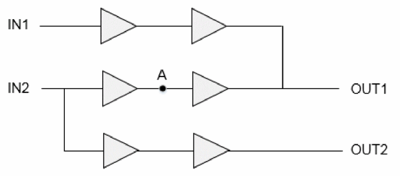

Constraint Generation during Model Extraction
The extracted models need to be validated before they are transferred to other designers to be used for a top level analysis or optimization flow. For validation purposes, we need a subset of the original timing constraints and further a subset of these constraints is needed for fitting the model in a top level netlist.
The model extraction process will output a timing library and two constraint files containing the subset of the original constraint. One of these constraint files will be used for a standalone validation of the model compared to the original netlist. By default model.asrt and model.asrt.latchInferredMCP will be written in the CWD. If the do_extract_model -assertions test.asrt command is specified, then three assertion files are generated, named -test.asrt. test.asrt.latchInferredMCP, and top_model.asrt. The other constraint file (top_model.asrt) will be used when the extracted model will be stitched to a top level netlist and test.asrt will be used for standalone model validation.
Two separate constraint files are required for the following:
- Standalone validation will need all the context parameters of the design.
- STA or optimization flow when stitched to a top level environment, the context parameter will be automatically coming from the top level. So some of the constraints (in the above file) need to be filtered.
The following sections describe constraints in a model extraction flow:
False Path Exceptions
If the set_false_path constraint is applied through some internal pins/ports, then those paths/arcs are removed during extraction.
If the set_false_path constraint is applied between clocks or a clock and a port, then these paths are removed and these exceptions are saved in a top_model.asrt as well as test.asrt file.
Multi-Cycle Path Exceptions
If multi-cycle paths through pins/ports are applied, then during extraction the worst paths through them mapped to the IO ports are calculated and the exceptions through these IOs are dumped in the top_model.asrt file.
Consider the following design scenario with multi-cycle path exception applied at A.
Figure -7 Multi-cycle path exception

If there is no path from IN1/OUT1 and IN2/OUT2, the multi-cycle path will be pushed to IN2/OUT1. Since there are other paths going through these ports, multi-cycle paths cannot be pushed to IN2/OUT1 and cycle adjustment is done in delay values of the arcs. This will make the model context dependent.
When you set timing_extract_model_disable_cycle_adjustment global variable to true, the software will disable the cycle adjustment to make ETM context independent. You will have to manually apply the multi-cycle path at the top level while using this ETM.
-
set_disable_timing
If theset_disable_timingconstraint is applied on any arc, then this arc gets disabled and is not used for the extraction purpose. Thus, such arcs are handled internally by the tool and are not written in any of the constraint files. Also, the path broken by them will not be extracted during ETM generation. -
set_case_analysis
Constants applied/propagated by theset_case_analysiscommand can be written as a function attribute of pins in the ETM by setting the timing_extract_model_case_analysis_in_library global variable totrue. This can be written in the ETM-validation constraint file generated by setting this global variable tofalse. -
create_clock
The pins/ports havingcreate_clockdefinitions on them are preserved in the timing model. If a clock is created on some internal pin then the pin name needs to be modified to reflect the instance name of the extracted model. This is achieved using the same variable approach.[get_pins “$ETM_CORE/pin1 $ETM_CORE/pin2 $ETM_CORE/pin3”]
When the extracted model is stitched to some top level netlist, then the clock definitions are supposed to come from the top level netlist itself. So that such clock definitions are not needed to be dumped in the top level constraint file, but need to exist in the assertion file for standalone validation. -
create_generated_clock
The pins having thecreate_generated_clockdefined on them are preserved in the extracted model as internal pins. As generated clocks are very much intended for the block itself and are not supposed to be coming from the top level, liberty provides syntax to define the generated clocks in the timing model. You can use the following use model:generated_clock (gclk) { clock_pin : gclk ; master_pin : clk ; multiplied by : 2 ; }
While loading a model, the software names the generated clocks after their target pin names, so while dumping the generated clocks in the library the target pin name is modified to the clock name itself. This facilitates the same name of generated clock names in the original netlist and the extracted model. This name changing cuts down the need to modify other constraints (clock uncertainty/path exceptions) related to this clock. In this case it is not required to dump these generated clocks as a separate constraint. -
set_input_delay/set_output_delay
The constraints likeset_input_delayandset_output_delaylie in this category. Though these constraints can be applied on ports as well as some internal pins. Such constraints applied on some internal pins are of no use for the extracted models, as in an extracted model only interface timing is considered.
The constraints applied on the ports need not any change as the port will be preserved with the same name. So these constraints are dumped out in the assertion file for validation and do not have any impact on the generated ETM. These need not to be dumped out for the top level constraint file as in a top level the data must be coming to the port from some other top level register or port. So the input delay value is supposed to be the delay of path from top level register/port to this port. -
set_max_transition/set_max_capacitance
If these constraints exist in the SDC file for block and the timing_extract_model_consider_design_level_drv global variable is set tofalse, then these max_cap/max_trans constraints (from SDC) will not have any impact on the generated model.
If thetiming_extract_model_consider_design_level_drvglobal variable is set totrue, then these constrains are considered while generating the timing model. The conservative value of max_transition defined at a library cell associated with a port orset_max_transitiondefined in the SDC is chosen for all the ports. Similarly, in case of max_capacitance, a conservative value defined at a library cell associated with a port or defined in the SDC is chosen for all the output ports. -
set_load/set_resistance/set_annotated_transition
Theset_load,set_resistance, orset_annotated_transitionconstraints can be applied on pins as well as ports. The constraints applied on internal pins are handled in the extraction flow during delay calculation and are included in the model. But the constraints applied on the ports are treated as out-of-context environment and need to be written out in the constraints file to be read for model validation. -
set_annotated_delay/set_annotated_check
Theset_annotated_delayorset_annotated_checkconstraint is applied on the internal arcs as incremental or absolute values. The annotated delays/checks are handled in the extraction flow during delay calculation, so these are included in the model. This constraint is not written out in any of the constraint files. -
set_input_transition/set_driving_cell
Theset_input_transitionorset_driving_cellconstraints are applied only on ports. At the top level, the input transition at ETM pins depends upon the transition of the signal coming from the top-level circuitry. Similarly, the driving cell is needed only at the block level to replicate the actual driver of ETM at the top level. Hence, these are written only in the validation constraint file. -
set_clock_uncertainty/set_clock_latency
By default, the clock uncertainty or clock latency constraints are written in the validation constraint file. But if thetiming_extract_model_include_latency_and_uncertaintyglobal variable is set totrue, then these values will be taken care of during ETM characterization. And the delay tables in ETM are written with these values included.
Return to top